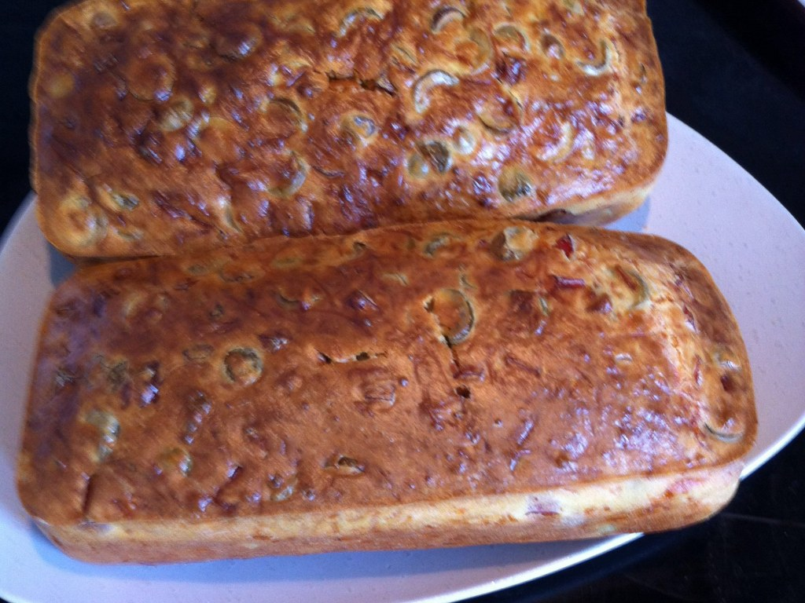

Cake salé au jambon et aux olives
| Ingrédients | Quantités |
| Huile | 1 Cuillère a soupe |
| Levure Chimique | 1 Sachet |
| Gruyère râpé | 75g |
 Farine Farine |
150g |
| dés de jambon | 100g |
| Olive vertes dénoyautées | 150g |
 Oeuf Oeuf |
4 |
 Lait Lait |
10cl |
| Ustenciles | Quantités |
| Grille à pâtisserie | 1 |
 Four Four |
1 |
 Couteau Couteau |
1 |
 Cuillère a bois Cuillère a bois |
1 |
 Dénoyauteur Dénoyauteur |
1 |
 Balance de cuisine Balance de cuisine |
1 |
 Plat Plat |
1 |
Préparation
| Préparation : | Repos : | Cuisson : | Temps Total : | Nombre de personne : |
| 20 min | X | 45 min | 1h05 | 6 |